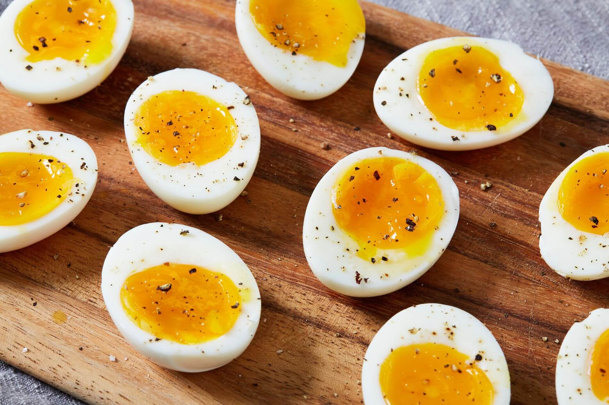

Home
Greek Pasta Salad
Cacio e Pe
Perfect Soft Boiled Eggs
Perfect Soft Boiled Eggs

Directions
- Add 1 inch of water to a sauce pot, cover, and bring to a boil over high heat.
- Once boiling, add an egg (or however many you'd like as long as they are in a single layer in the bottom of the pot),
straight from the refrigerator into the pot. Replace the lid and let it continue to boil for exactly six minutes.
- After six minutes, remove the egg(s) from the pot and place them in an ice water bath or run under cool water until they
are cool enough to handle. Peel, and enjoy!